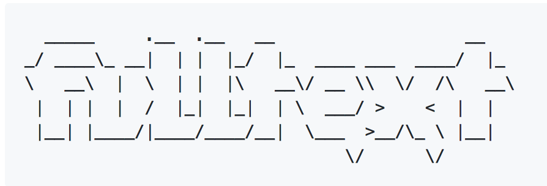
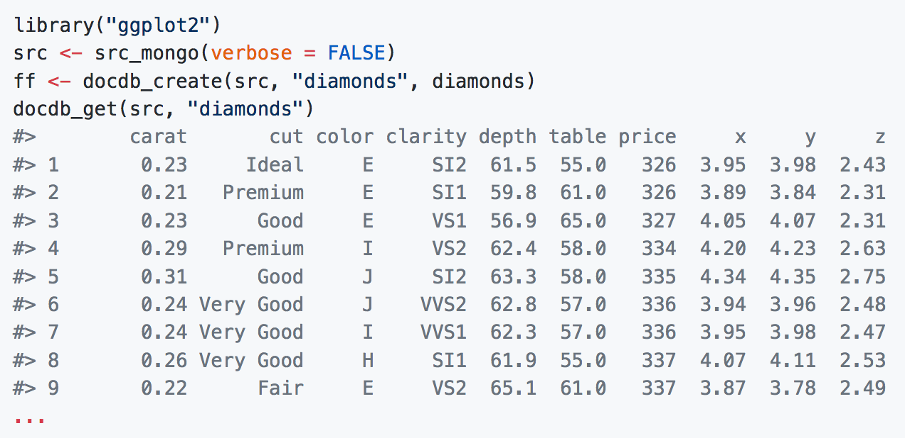

Jan 29, 2018
rOpenSci HQ
We’re more than thrilled to announce our new research software engineer Maëlle Salmon. Read the blog post for more and an interview with her.
Our next rOpenSci community call is coming up tomorrow (!), on January 31st. Find all the details for the upcoming and all past and future calls at http://communitycalls.ropensci.org/.
Nick Golding, rOpenSci Fellow, on enabling reproducible research in ecology with zoon and simple & scalable statistical modelling with greta
Software 📦
Releases
- A new version (
v1.0) offulltextis on CRAN. This is a major update for thefulltextpackage including a major re-working of theft_get()function for fetching fulltext works, simplified package API, a thorough and new manual for the package, and more. See the release notes for details. Check out the fulltext manual to get started. Repository on GitHub - A new version (
v0.5.0) ofcrulis on CRAN. See the release notes for details. Check out the crul vignettes to get started. Repository on GitHub - A new version (
v2.5.1) ofFedDatais on CRAN. See the NEWS for details. Check out the FedData docs to get started. Repository on GitHub - A new version (
v0.2.0) offinchis on CRAN. See the release notes for details. Check out the finch README to get started. Repository on GitHub - A new version (
v1.2) ofunrtfis on CRAN. See the NEWS for details. Check out the unrtf README to get started. Repository on GitHub - A new version (
v1.8) oftesseractis on CRAN. See the release notes for details. Check out the tesseract blog post to get started. Repository on GitHub - A new version (
v0.1.4) ofgutenbergris on CRAN. See the gutenbergr NEWS for details. Check out the gutenbergr vignette to get started. Repository on GitHub
Archived
- Reol has been archived on CRAN. It may return in the future.
Software Review ✔
We accept community contributed packages via our onboarding system - an open software review system, sorta like scholarly paper review, but way better. We’ll highlight newly onboarded packages here. A huge thanks to our reviewers, who do a lot of work reviewing (see the blog post on our review system), and the authors of the packages!
If you want to be a reviewer fill out this short form, and we’ll ping you when there’s a submission that fits in your area of expertise.
The following three packages were recently submitted for review:
- phylotaR > Automated phylogenetic sequence cluster identification from GenBank
- Author: Dom Bennett
- Issue: ropensci/onboarding#187
- Reviewers: not assigned yet
- NLMR > Simulating Neutral Landscape Models
- Author: Marco Sciaini
- Issue: ropensci/onboarding#188
- Reviewers: not assigned yet
- jstor > Functions and helpers to import metadata and full-texts delivered
by Data for Research (DfR) by JSTOR
- Author: Thomas Klebel
- Issue: ropensci/onboarding#189
- Reviewers: not assigned yet
On the blog
main blog
A post went up today Introducing Maëlle Salmon, rOpenSci’s new Research Software Engineer.
technotes
We’ve had two posts by Scott Chamberlain on our technotes blog in the past two weeks:
fulltext v1: text-mining scholarly works - the post discusses this v1 release of the fulltext package for text-mining scholarly works (mostly journal articles). Give the package a try and let us know what you think.

nodbi: the NoSQL Database Connector - the post discusses a package we started a few years back at an rOpenSci Unconference, but has been mostly ignored since then. We’re hoping to revive it - try it out!

Use cases
If you’ve used rOpenSci software in a blog post or a paper, tell us on the discussion forum and we’ll share it with our community here.
The following four works use/cite rOpenSci or rOpenSci software:
- Selvi & Chandrasekaran used ropenaq in their paper Performance evaluation of mathematical predictive modeling for air quality forecasting 1
- Serra-Diaz et al. used rgbif in their paper Big data of tree species distributions: how big and how good? 2
- Sinval et al. used skmir in their paper Work Engagement among Rescue Workers: Psychometric Properties of the Portuguese UWES 3
- Gay et al. used ckanr in their talk Blending Collaborations and Bridging Gaps: Digital Preservation Communities of Practice 4
In the news
We recently became aware of an R package fisheryO for working with ICES Fisheries Overviews data. See related post. In this package they leverage the rOpenSci package rnaturalearth, maintained by Andy South.
There was a recent use of the rOpenSci package USAboundaries (maintained by Lincoln Mullen) on the blog Genes & History: Where did my ancestors live?.
Malcolm Barrett used rOpenSci’s gutenbergr package in his post Stochastic Shakespeare: Sonnets Produced by Markov Chains in R
Our newest staff member Maëlle Salmon blogged about Galentine’s day cards and used our charlatan package to generate colors for the cards and our magick package to arrange the cards.
New #rstats post! "Galentine's day cards" R-crafted with random compliments à la Leslie Knope 🤗 and random colours! 🎨https://t.co/pYAONkYhxA
— Maëlle Salmon 🐟 (@ma_salmon) January 26, 2018
Feat. @GaborCsardi's praise&rcorpora, @sckottie's charlatan, @opencpu's magick pic.twitter.com/RC6EVSVIW8
Luke Smith used rOpenSci’s magick package to map crime in Houston:
Plotted with #ggplot2 and arranged with #ropensci magick #houston #crime pic.twitter.com/xCXHn5u7xt
— Luke Smith (@lksmth) January 24, 2018
LifeWatch INBO tweeted about demoing our rgbif package to their community:
Our @damianozingaro giving a demo of the great @rOpenSci rgbif package at the https://t.co/irOOg0Zy8o User & Stakeholders Meeting. https://t.co/jNuk3T7yAE pic.twitter.com/00U1HckFVb
— LifeWatch INBO (@LifeWatchINBO) January 26, 2018
Jonathan Gilligan used our rnoaa package to visualize the number of days temperature (Fahrenheit) dropped below zero in Nashville, TN (USA) since 1955. And he shared the code on GitHub.
Not relevant to global warming, but looking at my local climate: From 1950-1980 temperatures in Nashville went below zero Fahrenheit an average of once per winter. Since 1995 (22 years ago) they have never dropped below zero. (h/t xkcd https://t.co/1NxkHcXB6p) pic.twitter.com/NBXdmIX6if
— Jonathan Gilligan (@jg_environ) January 28, 2018
Submit news to rOpenSci
Reach out to us with your news suggestions by sending us an email info@ropensci.org or by contacting us on Twitter @ropensci
Keep up with rOpenSci
- Mailing list: Sign up with an email address to get this newsletter sent to your inbox -> ropensci.org/#subscribe
- Alternatively, you can subscribe to this newsletter via our XML feed at https://ropensci.github.io/biweekly/feed.xml or our JSON feed at https://ropensci.github.io/biweekly/feed.json
- rOpenSci on Twitter: @ropensci
- The rOpenSci blog at ropensci.org/blog - you can subscribe in any RSS aggregator, or manually via https://ropensci.org/feed.xml. We also announce new blog posts on our Twitter account.
Footnotes
-
Selvi, S., & Chandrasekaran, M. (2018). Performance evaluation of mathematical predictive modeling for air quality forecasting. Cluster Computing. https://doi.org/10.1007/s10586-017-1667-9 ↩
-
Serra-Diaz, J. M., Enquist, B. J., Maitner, B., Merow, C., & Svenning, J.-C. (2017). Big data of tree species distributions: how big and how good? Forest Ecosystems, 4(1). https://doi.org/10.1186/s40663-017-0120-0 ↩
-
Sinval, J., Marques-Pinto, A., Queirós, C., & Marôco, J. (2018). Work Engagement among Rescue Workers: Psychometric Properties of the Portuguese UWES. Frontiers in Psychology, 8. https://doi.org/10.3389/fpsyg.2017.02229 ↩
-
Gay, Amy; Broadway, Meredith; Carrano, Joe; Kostelic, Charlotte; and Potterbusch, Megan, “Blending Collaborations and Bridging Gaps: Digital Preservation Communities of Practice - ND SR Lightning Talks” (2017). Library Scholarship. 37. https://orb.binghamton.edu/librarian_fac/37 ↩